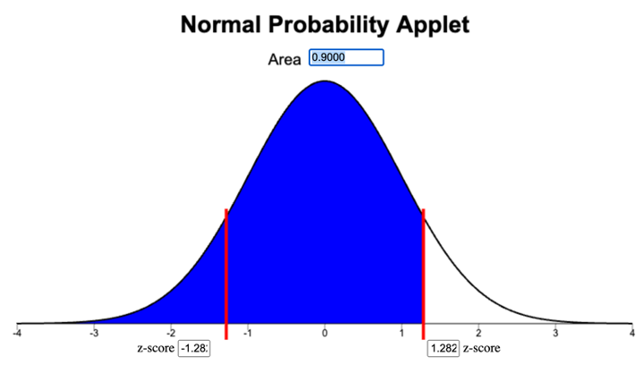
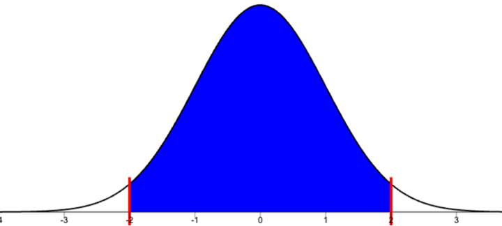
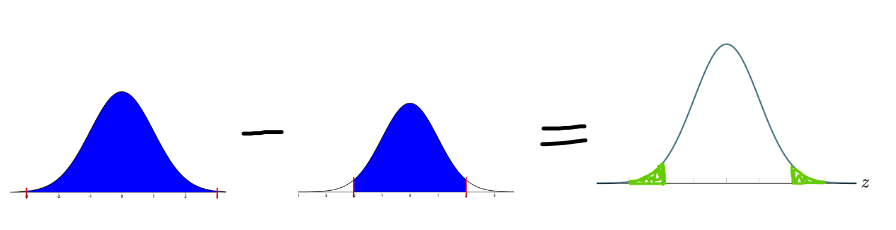

Date Money (z-score)
This list of problems focus on computations and concepts that students have a tendency of mixing up or need additional practice. These problems are intended the to be used as interleaved retrievel practice at the beginning of class to keep the concepts fresh in students minds throughout the semester.
As the problems are selected the box can be checked and a note can indicate which week/day it was used. It is probably okay to use problems more than once as long as there is some time between uses.
After Lesson 1
Probability Rules
- Problem: Probability Rules Error Identification
What’s wrong with the statement, “There is a 1.2 probability of snow in January in Rexburg”?
Possible Solution
A probability is a number between 0 and 1, \(0 \leq p \leq 1\). The probability of snow cannot be 1.2 because \(1.2 \nleq 1\) (rather 1.2 > 1).
- Problem: Snow in May
Suppose the probability of snow in Rexburg in May is 0.79. What is the probability of no snow in Rexburg in May?
Possible Solution
1-0.79 = 0.21
The probability that there will be no snow in Rexburg in May is 0.21.
- Problem: Tokens
A box of tokens contains 8 blue tokens, 6 red tokens, and 4 yellow tokens.
If a token is selected at random from the box, what is the probability that the token is blue?
Possible Solution
P( token is blue ) = \(\frac{8}{8+6+4} = \frac{8}{18} = \frac{4}{9} = 0.\overline{4}\)
If a token is selected at random from the box, what is the probability that the token is not red?
Possible Solution
P( token is red ) = \(\frac{6}{18} = 0.\overline{3}\)
P( token is NOT red ) = \(1 - 0.\overline{3} = 0.\overline{6}\)
- Problem: Blood Type
The probability that a randomly chosen North American has a particular ABO blood type and Rh factor is given below.
Source: “The Analysis of Biological Data” by Whitlock and Schluter, 3rd Edition, page 125.
| Blood Type | Probability |
|---|---|
| O+ | 0.374 |
| O- | 0.066 |
| A+ | 0.357 |
| A- | 0.063 |
| B+ | 0.085 |
| B- | 0.015 |
| AB+ | 0.034 |
| AB- | 0.006 |
What is the probability that a randomly selected North American, will have blood type A?
Possible Solution
P( has type A+ ) + P( has type A- ) = 0.357 + 0.063 = 0.42
The probability that randomly selected North American will have type A blood is 0.42.
What is the probability that a randomly selected North American, will ’‘’not’’’ have O+ blood type?
Possible Solution
1 - P( has type 0+) = 1 - 0.374 = 0.626
The probability that a randomly selected North American will not have O+ blood is 0.626.
- Problem: 3 Coin Flips
If you flip a fair coin 3 times you could get either 0, 1, 2, or 3 heads with the following probabilities.
| 0 Heads | 1 Head | 2 Heads | 3 Heads |
|---|---|---|---|
| \(\frac{1}{8}\) | ?? | \(\frac{3}{8}\) | \(\frac{1}{8}\) |
What is the probability that you will get 1 head in the three tosses?
Possible Solution
P( 1 head ) = 1 - P( not 1 head) = 1 - (1/8 + 3/8 + 1/8) = 1 - 5/8 = 3/8
What is the probability you will not get (exactly) 2 heads in the three tosses?
Possible Solution
1 - P( 2 heads ) = 1 - 3/8 = 5/8
After Lessons 3 and 4
Mean and Median
Problem: Comparing Mean and Median
Consider the following data set 6, 58, 100.
Calculate the mean.
Possible Solution
\(\overline{x} = \frac{6 + 58 + 100}{3} = 54.\overline{6}\)
The mean of the data is \(54.\overline{6}\).
Calculate the median.
Possible Solution
The data set in order is 6, 58, 100. We see the middle value is 58.
The median of the data is 58.
Suppose the 6 was a typo and was actually supposed to be a 60.
What is the mean of the corrected data? Did the mean increase, decrease, or stay the same when one number in the data changed?
Possible Solution
\(\overline{x} = \frac{60 + 58 + 100}{3} = 72.\overline{6}\)
The mean of the corrected data is \(72.\overline{6}\).
\(72.\overline{6} > 54.\overline{6}\)
The mean increased.
What is the median of the correct data? Did the median increase, decrease, or stay the same when one number in the data changed?
Possible Solution
The corrected data set in order is 58, 60, 100. We see the middle value is 60. The median of the corrected data is 60.
60 > 58
The median increased.
Consider the following data set 6, 87, 100.
Calculate the mean.
Possible Solution
\(\overline{x} = \frac{6 + 87 + 100}{3} = 64.\overline{3}\)
The mean of the data is \(64.\overline{3}\).
Calculate the median.
Possible Solution
The data set in order is 6, 87, 100. We see the middle value is 87.
The median of the data is 87.
Suppose the 6 was a typo and was actually supposed to be a 60.
What is the mean of the corrected data? Did the mean increase, decrease, or stay the same when one number in the data changed?
Possible Solution
\(\overline{x} = \frac{60 + 87 + 100}{3} = 82.\overline{3}\)
The mean of the corrected data is \(82.\overline{3}\).
\(82.\overline{3} > 64.\overline{3}\)
The mean increased.
What is the median of the correct data? Did the median increase, decrease, or stay the same when one number in the data changed?
Possible Solution
The corrected data set in order is 60, 87, 100. We see the middle value is 87. The median of the corrected data is 87.
87 = 87
The median stayed the same.
Suppose you have a set of 100 exam grades and the teacher noticed that the a student’s grade recorded as a 6 was actually supposed to be a 60.
Would changing the score from 6 to 60 cause the mean of the 100 grades to increase, decrease or stay the same?
Possible Solution
We saw with the toy data sets ({6, 58,100} and {6, 87, 100}) that changing the 6 to a 60 caused the mean to increase. Because 6 increased to 60 this caused the mean to increase.
Using this observation we see that changing the one score from 6 to 60 in the data set of 100 grades will also cause the mean to increase.
Would changing the score from 6 to 60 cause the median of the 100 grades to increase, decrease or stay the same?
Possible Solution
We saw with the toy data sets ({6, 58,100} and {6, 87, 100}) that changing the 6 to a 60 had a different effect on the median in each data set. This is because calculating the median requires that we compare the number 6 (or the corrected number 60) to every value in the data set when we order them. So we have to know the other values to know how the median is effected when we change the 6 to a 60.
Using this observation we see that don’t know how the median will change when we change the one score from 6 to a 60 in the 100 grades.
We would have to know the rest of the 100 grades to know how the median would change.
It might help students make the distinction between percentiles from a distribution verses sample percentiles if several problem sets include percentile
Percentile with Distribution
- Problem: Pregnancy 80th Percentile
The length of human pregnancies from conception to birth is normally distributed with mean 266 days and a standard deviation of 16 days. Find the 80th percentile.
Possible Solution
\(\mu =266\)
\(\sigma = 16\)
Normal Probability Applet Information
To find the \(z\)-score corresponding to the 80th percentile.
Select all the area to the left.
Type 0.8 in the Area box.
Read the \(z\)-score from the right box.

With 80% of the area to the left, the \(z\)-score is 0.842.
\(z = 0.842\)
\(\begin{aligned} x &= \mu + z\sigma \\ &= 266 + 0.842(16) \\ &= 279.472 \end{aligned}\)
The 80th percentile is 279.5 days (\(x = 279.5\)).
Problem: Pregnancy 90th Percentile
Week 4, Problem Set 1
The length of human pregnancies from conception to birth is normally distributed with mean 266 days and a standard deviation of 16 days. Find the 90th percentile.
Possible Solution
\(\mu = 266\)
\(\sigma = 16\)
Normal Probability Applet Information
To find the \(z\)-score corresponding to the 90th percentile.
- Select all the area to the left.
- Type 0.9 in the Area box.
- Read the \(z\)-score from the right box.

With 90% of the area to the left, the \(z\)-score is 1.282.
\(z = 1.282\)
\(\begin{align*} x &= \mu + z\sigma \\ &= 266 + 1.282(16) \\ &= 286.512\end{align*}\)
The 90th percentile is 286.5 days (\(x = 286.5\)).
=NORM.INV(.9,266,16)Problem: Pregnancy 20th Percentile
Week 3, Problem Set 1
The length of human pregnancies from conception to birth is normally distributed with mean 266 days and a standard deviation of 16 days. Find the 20th percentile.
Possible Solution
\(\mu = 266\)
\(\sigma = 16\)
Normal Probability Applet Information
To find the \(z\)-score corresponding to the 20th percentile.
- Select all the area to the left.
- Type 0.2 in the Area box.
- Read the \(z\)-score from the left box.

With 20% of the area to the left, the \(z\)-score is -0.842.
=NORM.S.INV(0.2)\(z = -0.842\)
\(\begin{align*} x &= \mu + z\sigma \\ &= 266 + (-0.842)16 \\ &= 252.528\end{align*}\)
The 20th percentile is 252.5 days (\(x = 252.5\)).
- Problem: Pregnancy 25th Percentile
The length of human pregnancies from conception to birth is normally distributed with mean 266 days and a standard deviation of 16 days. Find the 25th percentile.
Possible Solution
\(\mu = 266\)
\(\sigma = 16\)
Normal Probability Applet Information
To find the \(z\)-score corresponding to the 25th percentile.
- Select all the area to the left.
- Type 0.25 in the Area box.
- Read the \(z\)-score from the left box.

With 25% of the area to the left, the \(z\)-score is -0.674.
\(z = -0.674\)
\(\begin{align*} x &= \mu + z\sigma \\ &= 266 + (-0.674)16 \\ &= 255.216\end{align*}\)
The 25th percentile is 255.2 days (\(x = 255.2\)).
The 1st quartile is 255.216 days.
=NORM.INV(0.25,266,16)- Problem: Pregnancy 50th Percentile
The length of human pregnancies from conception to birth is normally distributed with mean 266 days and a standard deviation of 16 days. Find the 25th percentile.
Possible Solution
\(\mu = 266\)
\(\sigma = 16\)
Normal Probability Applet Information
To find the \(z\)-score corresponding to the 25th percentile.
- Select all the area to the left.
- Type 0.25 in the Area box.
- Read the \(z\)-score from the left box.
With 25% of the area to the left, the \(z\)-score is -0.674.
\(z = -0.674\)
\(\begin{align*} x &= \mu + z\sigma \\ &= 266 + (-0.674)16 \\ &= 255.216\end{align*}\)
The 25th percentile is 255.2 days (\(x = 255.2\)).
The 1st quartile is 255.216 days.
=NORM.INV(0.25,266,16)Percentile with Data
- Problem: Sugar Sack Weights 80th percentile
Use the data from tinyurl.com/M221-dist-shapes to calculate the 80th percentile of sugar sack weights.
Possible Solution
=PERCENTILE(B:B,0.8)The 80th percentile of sugar sack weights is 10.093.
Problem: Wait Times 40th percentile
Week 3, Problem Set 1
Use the data from tinyurl.com/M221-dist-shapes to calculate the 40th percentile of wait times.
Possible Solution
=PERCENTILE(C:C,0.4)The 40th percentile of wait times is 1.8.
- Problem: Test Scores 95 percentile
Use the data from tinyurl.com/M221-dist-shapes to calculate the 95th percentile of test scores.
Possible Solution
=PERCENTILE(A:A,0.95)The 95th percentile of test scores is 97.
After Lesson 5
Approximate Rule for Bell Shaped Distributions
Assign Problem 1-3 on the day of Lesson 5. I think the students should have enough information after the reading to help each other reason through these exercises.
Problem: 68-95-99.7 Rule Problem 1
Use the 68-95-99.7 rule to calculate the approximate area from \(z = -1\) to \(z=0\). Remember the normal distribution is symmetric.
Possible Solution
The area within 1 standard deviation of the mean is approximately 0.68.
The distribution is symmetric so the area from \(z=0\) to \(z=1\) will be half of 0.68.
0.68/2 = 0.34
The area from \(z = -1\) to \(z=0\) will be approximately 0.34 (or 34% of the total area).
What does that tell you about the area from \(z = 0\) to \(z=1\)?
Possible Solution
Because the distribution is symmetric, it will be the same as the area from \(z = -1\) to \(z = 0\) (or 34% of the total area).
Use the 68-95-99.7 rule to calculate the approximate below \(z=-1\).
Possible Solution
The area within 1 standard deviation of the mean is approximately 0.68.
The total area is 1, so the area in both tails combine will be 1-0.68 = 0.32.
Since the distribution is symmetric, the area in the left tail will be half of that, 0.32/2 = 0.16.
The area below \(z = -1\) will be approximately 0.16 (or 16% of the total area).
What does that tell you about the area above \(z = 1\)?
Possible Solution
Because the distribution is symmetric, it will be the same as the area below \(z = -1\) (or 16% of the total area).
Problem: 68-95-99.7 Rule Problem 2
Use the 68-95-99.7 rule to calculate the approximate area from \(z = -2\) to \(z=0\).
Possible Solution
The area within 2 standard deviation of the mean is approximately 0.95.

The distribution is symmetric so the area from \(z=0\) to \(z=2\) will be half of 0.95.
0.95/2 = 0.475
The area from \(z = -2\) to \(z=0\) will be approximately 0.475 (or 47.5% of the total area).
What does that tell you about the area from \(z = 0\) to \(z=2\)?
Possible Solution
Because the distribution is symmetric, it will be the same as the area from \(z = -2\) to \(z = 0\) (or 47.5% of the total area).
Use the 68-95-99.7 rule to calculate the approximate below \(z=-2\).
Possible Solution
The area within 2 standard deviation of the mean is approximately 0.95.
The total area is 1, so the area in both tails combine will be 1-0.95 = 0.05.
Since the distribution is symmetric, the area in the left tail will be half of that, 0.05/2 = 0.025.
The area below \(z = -2\) will be approximately 0.025 (or 2.5% of the total area).
What does that tell you about the area above \(z = 2\)?
Possible Solution
Because the distribution is symmetric, it will be the same as the area below \(z = -2\) (or 2.5% of the total area).
Problem: 68-95-99.7 Rule Problem 3
Use the 68-95-99.7 rule to calculate the approximate area from \(z = -3\) to \(z=0\).
Possible Solution
The area within 3 standard deviation of the mean is approximately 0.997.

The distribution is symmetric so the area from \(z=0\) to \(z=3\) will be half of 0.997.
0.997/2 = 0.4985
The area from \(z = -3\) to \(z=0\) will be approximately 0.4985 (or 49.85% of the total area).
What does that tell you about the area from \(z = 0\) to \(z=3\)?
Possible Solution
Because the distribution is symmetric, it will be the same as the area from \(z = -3\) to \(z = 0\) (or 49.85% of the total area).
Use the 68-95-99.7 rule to calculate the approximate below \(z=-3\).
Possible Solution
The area within 3 standard deviation of the mean is approximately 0.997.
The total area is 1, so the area in both tails combine will be 1-0.997 = 0.003.
Since the distribution is symmetric, the area in the left tail will be half of that, 0.003/2 = 0.0015.
The area below \(z = -3\) will be approximately 0.0015 (or 0.15% of the total area).
What does that tell you about the area above \(z = 3\)?
Possible Solution
Because the distribution is symmetric, it will be the same as the area below \(z = -3\) (or 0.15% of the total area).
- Problem: 68-95-99.7 Rule Problem 4
Use the 68-95-99.7 rule to calculate the approximate area less than \(z = -2\). Remember to draw pictures as part of your solution.
Possible Solution
The area within 2 standard deviation of the mean is approximately 0.95.
The remaining area is approximately 1-0.95 = 0.05.
Since the normal distribution is symmetric the area in the left tail (the area less than \(z = -2\)) is half that, 0.05/2 = 0.025.
The area less than \(z = -2\) is approximately 0.025 (or 2.5% of the total area).
Use the 68-95-99.7 rule to calculate the approximate area less than \(z = 1\). Remember to draw pictures as part of your solution.
Possible Solution
The area within 1 standard deviation of the mean is approximately 0.68.
The remaining area is approximately 1-0.68 = 0.32.
Since the distribution is symmetric the area in the left tail (the area less than \(z = -1\)) is half that, 0.32/2 = 0.16.
The area less than \(z = 1\) is the sum of the area to the left of \(z = -1\) and the area between -1 and 1. We compute 0.16 + 0.68 = 0.84.
The area less than \(z = 1\) is approximately 0.84 (or 84% of the total area).
Use the 68-95-99.7 rule to calculate the approximate area between \(z = -2\) and \(z = 1\). Remember to draw pictures as part of your solution.
Possible Solution
The area we want to find is shown below.

If you subtract the area to the left of \(z = -2\) from the area to the left of \(z = 1\) you will be left with the area between \(z = -2\) and \(z = 1\).

The area to the left of \(z = -2\) is 0.025 (Recall the calculation \(\frac{1 - 0.9 5}{2} = 0.025\) from “part a” above).
The area to the left of \(z = 1\) is 0.84 (Recall the calculation \(\frac{1-0.68}{2} + 0.68 = 0.84\) from “part b” above).
Taking away the area to the left of \(z = -2\) from the area to the left of \(z = 1\) we have \(0.84 - 0.025 = 0.815\).
The area between \(z = -2\) and \(z = 1\) is 0.815 (or 81.5% of the total area).
Can you find a group that calculated these areas different from you? What can you learn from that group?
Problem: 68-95-99.7 Rule Problem 5
Week 3, Problem Set 1
Use the 68-95-99.7 rule to calculate the approximate area between \(z = 2\) and \(z = 3\). Remember to draw pictures.
Possible Solution
The area we are interested in is shown below.
The area within 3 standard deviation of the mean is approximately 0.997.
The area within 2 standard deviation of the mean is approximately 0.95.
If we remove (subtract) the area between \(z = -2\) and \(z=2\) from the area between \(z = -3\) and \(z=3\), we will be left with the areas between \(z=-3\) and \(z=-2\) and between \(z=2\) and \(z=3\).

0.997 - 0.95 = 0.047
Because the distribution is symmetric these two remaining areas will be the same size.
0.047/2 = 0.0235
The area between \(z = 2\) and \(z = 3\) is 0.0235 (or 2.35% of the total area).
Can you find a group that calculated the area different from you?
There is room for more Empirical Rule Problems like these.
Probability Calculations with Normal Distribution
- Problem: Pregnancy
The length of human pregnancies from conception to birth is normally distributed with mean 266 days and a standard deviation of 16 days.
What is the probability a pregnancy lasts less than 242 days?
Possible Solution
\(\mu = 266\)
\(\sigma = 16\)
\(x = 242\)
\(z = \frac{x - \mu}{\sigma} = \frac{242 - 266}{16} = -1.5\)
Normal Probability Applet Information
To find the probability corresponding to a \(z\)-score.
- Shade the area(s) of interest.
- Type the \(z\)-score in the box (negative value the left box and positive values the right box).
- Read the probability from the area box.
\(P(X < 242) = P(Z < -1.5) = 0.0668\)
=NORM.DIST(242,266,16,TRUE)The probability that a pregnancy lasts less than 242 days is 0.067.
What is the probability a pregnancy lasts less than 278 days?
Possible Solution
\(\mu = 266\)
\(\sigma = 16\)
\(x = 278\)
\(z = \frac{x - \mu}{\sigma} = \frac{278 - 266}{16} = 0.75\)
Normal Probability Applet Information
To find the probability corresponding to a \(z\)-score.
- Shade the area(s) of interest.
- Type the \(z\)-score in the box (negative value the left box and positive values the right box).
- Read the probability from the area box.
=NORM.DIST(278,266,16,TRUE)\(P(X < 278) = P(Z < 0.75) = 0.7734\)
The probability that a pregnancy lasts less than 278 days is 0.773.
What is the probability a pregnancy lasts between 242 and 278 days?
Possible Solution
We are looking for the area between \(z = -1.5\) and \(z = 0.75\), shown below.
We can find this area by taking away the area to the left of \(z=-1.5\) from the area to the left of \(0.75\).
\(P(242 < X < 278) = P(-1.5 < Z < 0.75) = 0.7734 - 0.0668 = 0.7066\)
=NORM.DIST(278,266,16,TRUE) - NORM.DIST(242,266,16,TRUE)The probability that a pregnancy lasts between 242 and 278 days is 0.707.
- Problem: LSAT
The Law School Admission Test (LSAT) is required for admission to many law schools. The scores on the LSAT are approximately normal with mean of 150 and standard deviation of 9. Queen’s School of Business in Kingston, Ontario requires a minimum LSAT score of 157 for admission. What is the probability that a randomly selected student will score below 157?
Possible Solution
$= 150 $
$= 9 $
\(x = 157\)
\(z = \frac{x - \mu}{\sigma} = \frac{157 - 150}{9} = 0.\overline{7}\)
Normal Probability Applet Information
To find the probability corresponding to a \(z\)-score.
- Shade the area(s) of interest.
- Type the \(z\)-score in the box (negative value the left box and positive values the right box).
- Read the probability from the area box.
=NORM.DIST(157,150,9,TRUE)\(P(X < 157) = P(Z < 0.\overline{7}) = 0.7817\)
The probability a randomly selected student will score below 157 is 0.782.
After Lessons 6 and 7
Note: Some calculations for Lesson 7 are the calculations used in Lesson 9.
\(Z\)-Score Calculations
Variable \(X\)
- Problem: GRE
Scores on the quantitative portion of the GRE are approximately normal distributed with mean \(\mu = 150.8\) and a standard deviation of \(\sigma = 8.8\). Dianne earned a score of 155 on the quantitative portion of the GRE. What is the \(z\)-score corresponding to Dianne’s score?
Possible Solution
\(\mu = 150.8\)
\(\sigma = 8.8\)
\(x = 155\)
\(z = \frac{x - \mu}{\sigma} = \frac{155 - 150.8}{8.8} = 0.477273\)
The \(z\)-score corresponding to Dianne’s score of 155 is \(z = 0.477\).
Variable \(\overline{X}\)
- Problem: Date Money
Assume that the amount of money BYU-Idaho students spend on a date is right-skewed with a mean of $16 and a standard deviation of $20. What is the \(z\)-score corresponding to a random sample of 45 BYU-Idaho students with a mean of $10 spent on their last date?
Possible Solution
\(\mu = 16\)
\(\sigma = 20\)
\(n = 45\)
\(\overline{x} = 10\)
\(z = \frac{\overline{x} - \mu}{\frac{\sigma}{\sqrt{n}}} = \frac{10-16}{\frac{20}{\sqrt{45}}} = -2.01246\)
The \(z\)-score corresponding to a reandom sample of 45 BYU-Idaho students with a mean of $10 spent on their last date is \(z = -2.012\).
Probability Calculations
Variable \(X\)
Problem: Reading Speed
Week 3, Problem Set 1
The reading speed of second grade students is approximately normal, with a mean of 90 words per minute (wpm) and a standard deviation of 10 wpm (Sullivan, pp. 439). What is the probability a randomly selected student will read more than 95 words per minute?
Possible Solution
\(\mu = 90\)
\(\sigma = 10\)
\(x = 95\)
\(z = \frac{x-\mu}{\sigma} = \frac{95 - 90}{10} = 0.5\)
Normal Probability Information
To find the probability corresponding to a \(z\)-score.
Shade the side of interest.
Type the \(z\)-score in the box (negative value the left box and positive values the right box).
Read the probability from the area box.
=1-NORM.S.DIST(0.5,TRUE)
\(P(X>95) = P(Z>0.5) = 0.3085\)
The probability a randomly selected student will read faster than 95 words per minute is 0.309.
Variable \(\overline{X}\)
- Problem: GPA 1
Suppose the mean GPA of BYU-Idaho students is 3.5 and the standard deviation is 0.7. It is well known that this distribution is left-skewed. What is the probability that a random sample of 70 students will have a mean GPA less than 3.6?
Possible Solution
\(\mu = 3.5\)
\(\sigma = 0.7\)
\(n = 70\)
\(\overline{x} = 3.6\)
\(z = \frac{\overline{x} - \mu}{\frac{\sigma}{\sqrt{n}}} = \frac{3.6 - 3.5}{\frac{0.7}{\sqrt{70}}} = 1.19523\)
Normal Probability Applet Information
To find the probability corresponding to a \(z\)-score.
Shade the side of interest.
Type the \(z\)-score in the box (negative value the left box and positive values the right box).
Read the probability from the area box.
\(P(\overline{X} < 3.6) = P(Z<1.195) = 0.8840\)
=NORM.DIST(3.6, 3.5, 0.7/SQRT(70), TRUE)
The probability a randomly selected sample of 70 students will have a mean GPA less than 3.6 is 0.884.
- Problem: GPA
Calculate the probability, if possible. If it is not possible to compute the probability explain why not.
Suppose the mean GPA of BYU-Idaho students is 3.5 and the standard deviation is 0.7. It is well known that this distribution is left-skewed. What is the probability that a random sample of 17 students will have a mean GPA less than 3.2?
Possible Solution
We know \(\overline{X}\) is not normally distributed since \(n=17\) and the population (of GPAs) is left-skewed. So we cannot calculate this probability!
Problem: Reading Speed (Take 2)
Week 3, Problem Set 1
Calculate the probability, if possible. If it is not possible to compute the probability explain why not.
The reading speed of second grade students is approximately normal, with a mean of 90 words per minute (wpm) and a standard deviation of 10 wpm (Sullivan, pp. 439). What is the probability that a random sample of 3 second grade students will have a mean reading rate less than 93 words per minute?
Possible Solution
\(\mu = 90\)
\(\sigma = 10\)
\(n = 3\)
\(\overline{x} = 93\)
\(z = \frac{\overline{x} - \mu}{\frac{\sigma}{\sqrt{n}}} = \frac{93-90}{\frac{10}{\sqrt{3}}} = 0.519615\)
Normal Probability Applet Information
To find the probability corresponding to a \(z\)-score.
Shade the side of interest.
Type the \(z\)-score in the box (negative value the left box and positive values the right box).
Read the probability from the area box.
\(P(\overline{X} <93) = P(Z < 0.52) = 0.6985\)
=NORM.DIST(93, 90, 10/SQRT(3), TRUE)
The probability that a random sample of 3 second grade students will have a mean reading rate less than 93 words per minute is 0.699.
Problem: Generic Sampling Distribution
Calculate the probability, if possible. If it is not possible to compute the probability explain why not.
Given data that are right-skewed, \(\mu = 5\), and \(\sigma = 2\). What is the probability a random sample of 12 will have a mean greater than 10?
Possible Solution
We know \(\overline{X}\) is not normally distributed since \(n=12\) and the population is right-skewed. So we cannot calculate this probability!
Problem: TV (Probability)
Week 4, Set 1
The amount of time Americans spend watching television is closely monitored by A.C. Nielsen because this helps to determine advertising pricing for commercials. It is known the distribution of time Americans watch television is right skewed, with a mean of 2.35 hours per day and a standard deviation of 1.93 (Sullivan, pp. 440). What is the probability that a random sample of 70 Americans has a mean TV viewing time greater than 1 hour per day?
Possible Solution
\(\mu = 2.35\)
\(\sigma = 1.93\)
\(n = 70\)
\(\overline{x} = 1\)
\(z = \frac{\overline{x} - \mu}{\frac{\sigma}{\sqrt{n}}} = \frac{1-2.35}{\frac{1.93}{\sqrt{70}}}=-5.85229\)
Normal Probability Applet Information
To find the probability corresponding to a \(z\)-score.
- Shade the side of interest.
- Type the \(z\)-score in the box (negative value the left box and positive values the right box).
- Read the probability from the area box.
=NORM.S.DIST(-5.852,TRUE)\(P(\overline{X} > 1) = P(Z>-5.852) \approx 1\)
=NORM.DIST(1,2.35,1.93/SQRT(70),TRUE)The probability that the mean TV viewing time for a sample of 70 Americans is greater than 1 hour per day is very close to 1. (Note: This is a p-value, one tailed.)
After Lesson 9
Problem: PH Probability and Hypothesis Test
Week 4, Set 2
Part (a)
In a manufacturing facility, the pH of a solution must be carefully monitored. Historically, the pH values have been normally distributed with mean 3.25 and standard deviation 0.08. Find the probability that on the next test the pH of the solution will be less than 3.32.
Possible Solution
\(\mu = 3.25\)
\(\sigma = 0.08\)
\(x = 3.32\)
\(z = \frac{x - \mu}{\sigma} = \frac{3.32 - 3.25}{0.08} = 0.875\)
Normal Probability Applet Information
To find the probability corresponding to a \(z\)-score.
- Shade the side of interest.
- Type the \(z\)-score in the box (negative value the left box and positive values the right box).
- Read the probability from the area box.
\(P(X < 3.32) = P(Z < 0.875) = 0.8092\)
The probability that on the next test the pH will be less than 3.32 is 0.809.
Part (b)
In a manufacturing facility, the pH of a solution must be carefully monitored. Historically, the pH values have been normally distributed with mean 3.25 and standard deviation 0.08. The quality control department wants to test whether the true mean pH is less than 3.25. They will use the next sample to complete this test. The next sample has a pH of 3.32.
Possible Solution
Null and alternative hypotheses
\(H_0: \mu = 3.25\)
\(H_a: \mu < 3.25\)
Level of significance
\(\alpha = 0.05\)
Summary statistics
\(x = 3.32\)
Assume \(\sigma = 0.08\)
Test statistic\(z = \frac{x - \mu}{\sigma} = \frac{3.32-3.25}{0.08} = 0.875\)
Note: This is the same as \(z = \frac{\overline{x} - \mu}{\frac{\sigma}{\sqrt{n}}} = \frac{3.32 - 3.25}{\frac{0.08}{\sqrt{1}}} = 0.875\).
P-value and comparison to \(\alpha\)
Because the alternative hypothesis is \(\mu < 3.25\) we are looking for the probability of being less than the test statistic.
Normal Probability Applet Information
To find the probability corresponding to a \(z\)-score.
- Shade the side of interest.
- Type the \(z\)-score in the box (negative value the left box and positive values the right box).
- Read the probability from the area box.
\(P(X < 3.32) = P(Z < 0.875) = 0.8092\)
\(p\)-value = 0.809 > 0.05 = \(\alpha\)
Conclusion
We fail to reject the null hypothesis.
English Sentence
There is insufficient evidence to suggest that the mean pH is less than 3.25.
Part (c)
Compare the previous two parts. The first part is a probability question. The second part is a hypothesis test question. What similarities do you notice?
Possible Solution
The probability calculation in the first part is the same calculation in the Test Statistic and p-value calculations of the hypothesis in the second part.
After Lesson 10
Sample Size Calculations
Problem: Blinks
Suppose you are scientist and you want to use a confidence interval to estimate the true mean number of times a person in your city blinks each day. Find the sample size required to construct a 90% confidence interval with a margin of error 43 blinks for the true mean number of time a person blinks each day. Assume the standard deviation of blinks per day is 1240.
Possible Solution
\(z^* = 1.645\) (because we want a confidence level of 90%)
\(m = 43\)
\(\sigma = 1240\)
\(n = \left(\frac{z^* \sigma}{m}\right)^2 = \left(\frac{(1.645)(1240)}{1240}\right)^2 = 2250.29\)
We need a sample size of at least 2251. Remember to round up to the next integer with sample size calculations.
After Lesson 16
Note: Some calculations for Lesson 16 are the calculations used in Lesson 17.
\(Z\)-Score Calculations
Variable \(\hat{P}\)
Problem: Soccer
John is a soccer player. He knows that he scores a goal 60% of the time. What is the \(z\)-score corresponding to John scoring 51 of 78 attempted goals?
Possible Solution
\(p = 0.6\)
\(x = 51\)
\(n = 78\)
\(\hat{p} = \frac{x}{n} = \frac{51}{78} = 0.653846\)
\(\begin{align*} z &= \frac{\hat{p} - p}{\sqrt{\frac{p(1-p)}{n}}} \\ &= \frac{(51/78) - 0.6}{\sqrt{\frac{0.6(0.4)}{78}}} \\ &= 0.970725 \end{align*}\)The \(z\)-score corresponding to John scoring 51 of 78 attempted goals is \(z = 0.971\).
Probability Calculations
Variable \(\hat{P}\)
Problem: Phishing Emails
First Data Corp. records indicate that in 2005, 43% of adult email users received a phishing email. A phishing email replicates an authentic site for the purpose of stealing personal information such as account numbers and passwords. Suppose a random sample of 400 adults will be surveyed on whether they have received phishing emails to determine recent trends. What is the probability that more than 38% of those in such a survey would have received a phishing email?
Possible Solution
\(p = 0.43\)
\(n = 400\)
\(\hat{p} = 0.38\)
\(z = \frac{\hat{p}-p}{\sqrt{\frac{p(1-p)}{n}}} = \frac{0.38-0.43}{\sqrt{\frac{0.43(1-0.43)}{400}}} = -2.01989\)
Normal Probability Applet Information
To find the probability corresponding to a \(z\)-score.
- Shade the side of interest.
- Type the \(z\)-score in the box (negative value the left box and positive values the right box).
- Read the probability from the area box.
\(P(\hat{P} > 0.38) = P(Z > -2.01989) = 0.9783\)
=1-NORM.DIST(0.38,0.43,SQRT(0.43*(1-0.43)/400),TRUE)The probability that more than 38% of respondents in such a survey would have received a phishing email is 0.978.
Problem: Stock Market
You take a simple random sample of 200 adults from a town in the Western United States to determine the proportion of those in town who invest in the stock market. Assume the unknown population proportion or percentage of people in town who invest in the stock market is (or 30%). What is the probability that more than 25% of those in such a survey would have invested in the stock market?
Possible Solution
\(p = 0.3\)
\(n = 200\)
\(\hat{p} = 0.25\)
\(z = \frac{\hat{p}-p}{\sqrt{\frac{p(1-p)}{n}}} = \frac{0.25-0.3}{\sqrt{\frac{0.3(0.7)}{200}}} = -1.54303\)
Normal Probability Applet Information
To find the probability corresponding to a \(z\)-score.
- Shade the side of interest.
- Type the \(z\)-score in the box (negative value the left box and positive values the right box).
- Read the probability from the area box.
\(P(\hat{P} > 0.25) = P(Z > -1.543) = 0.9386\)
=1-NORM.DIST(0.25,0.3,SQRT(0.3*(0.7)/200),TRUE)The probability that more than 38% of respondents in such a survey would have received a phishing email is 0.978.
Problem: Smoking Teens
Calculate the probability, if possible. If it is not possible to compute the probability explain why not.
A study was conducted to determine the proportion of American teenagers who smoke. Previous surveys showed that 15% percent of teenagers smoke. A Gallup survey interviewed a nationally representative sample of 785 teenagers. What is the probability less than 97 teenagers in the survey smoke?
Possible Solution
\(p = 0.15\)
\(n = 785\)
\(np = 785(0.15) = 117.75 \geq 10\) (check!)
\(n(1-p) = 785(1-0.15) = 667.25 \geq 10\) (check!)
\(x = 97\)
\(\hat{p} = \frac{x}{n} = \frac{97}{785} = 0.123567\)
\(z = \frac{\hat{p} - p}{\sqrt{\frac{p(1-p)}{n}}} = \frac{\frac{97}{785} - 0.15}{\sqrt{\frac{0.15(1-0.15)}{785}}} = -2.07409\)
=((97/785) - 0.15)/SQRT(0.15*(1-0.15)/785)Normal Probability Applet Information
To find the probability corresponding to a \(z\)-score.
- Shade the side of interest.
- Type the \(z\)-score in the box (negative value the left box and positive values the right box).
- Read the probability from the area box.
\(P(X < 97) = P(\hat{P} < 0.124) = P(Z < -2.074) = 0.0190\)
=NORM.DIST(97/785, 0.15, SQRT(0.15*(1-0.15)/785), TRUE)The probability less than 97 teenagers in the survey smoke is 0.019.
Problem: COVID
Calculate the probability, if possible. If it is not possible to compute the probability explain why not.
Data from the Centers for Disease Control and Prevention shows that among the people in the United States who are fully vaccinated, the probability of getting COVID is very, very small: only 0.0001. Suppose you plan to survey 50,000 people (\(n=50000\)) who are fully vaccinated to see if they contracted COVID after getting the vaccine. What is the probability that less than 10 of the fully vaccinated people you survey contracted COVID after getting the vaccine?
Possible Solution
\(p = 0.0001\)
\(n = 50000\)
\(np = 50000(0.0001) = 5 \ngeq 10\)
Since \(np \neq 10\) we see \(\hat{P}\) is not normally distributed. So we cannot calculate this probability!
Sample Size
Problem: Generic Sampling Distribution Check
Given the true proportion is \(p = 0.1\). What is the smallest value of \(n\) that satisfies the requirements for the random variable \(\hat{p}\) to be normally distributed?
Possible Solution
\(p = 0.1\)
\(\begin{align*}np &\geq 10 \\n(0.1) &\geq 10 \\n &\geq \frac{10}{0.1} = 100 \\n &\geq 100\end{align*}\)
\(\begin{align*} n(1-p) &\geq 10 \\ n(0.9) &\geq 10 \\ n &\geq \frac{10}{0.9} = 11.\overline{1} \\ n &\geq 11.\overline{1} \end{align*}\)
Since both \(np\) and \(n(1-p)\) are greater than 10 when \(n \geq 100\), we see that the smallest value of \(n\) so that \(\hat{P}\) is normally distributed is \(n=100\).
After Lesson 17
Sample Size
Problem: Doctors
A survey of doctors is planned to see what percentage prescribe a certain medication. Find the sample size required to achieve a 5% margin of error if the confidence level is 90%.
Possible Solution
\(z^* = 1.645\) (because we want a confidence level of 90%)
\(m = 0.05\)
\(n = \left(\frac{z^*}{2m}\right)^2 = \left(\frac{1.645}{2(0.05)}\right)^2 = 270.603\)
We need a sample size of at least 271. Remember to round up to the next integer with sample size calculations.
Problem: Dow Jones Industrial Average
A recent book noted that only 20% of all investment managers outperform the Dow Jones Industrial Average over a five-year period. Suppose you are in charge of designing the study. What sample size would be needed to construct a 98% confidence interval with a margin of error 3%.
Possible Solution
\(p^* = 0.2\)
\(z^* = 2.326\) (because we want a confidence level of 98%)
\(m = 0.03\)
\(n = \left( \frac{z^*}{m} \right)^2 p^*(1 - p^*) = \left(\frac{2.326}{0.03}\right)^2(0.02)(0.8) = 961.827\)
We need a sample size of at least 962. Remember to round up to the next integer with sample size calculations.